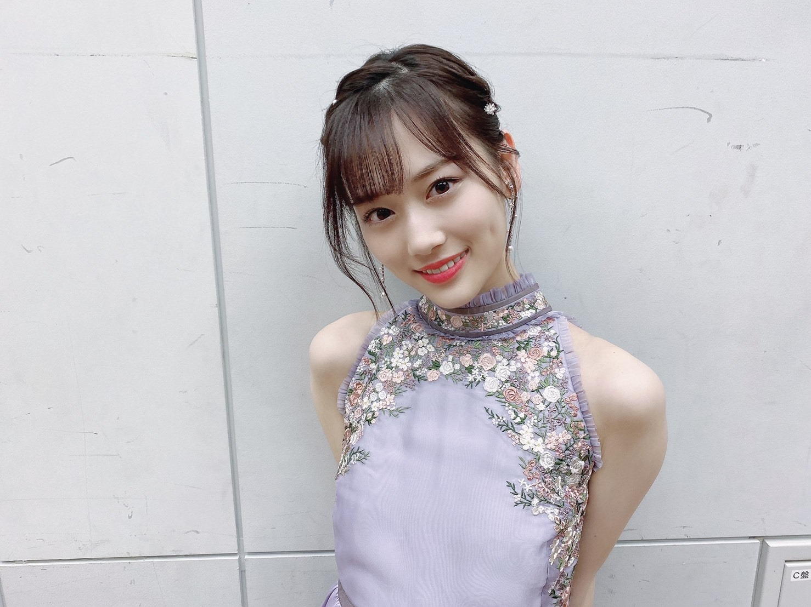

<hrml>
    <head>
        <meta charset="utf-8">
        <title>ページ２</title>
        <link rel="stylesheet" type="text/css" href="css/page2.css"> 
        </head>
    <body> 
        <h1 class="whitecolor">乃木坂の推しメン紹介</h1>
        
        <h2 class="greencolor">山下美月</h2>
        
        
        <h4>1999年7月26日生まれ。今度発売される26枚目シングル「僕は僕を好きになる」でセンターを務める</h4>
        
        
        
        <h2 class="redcolor">久保史緒里</h2>
        
        
        <h4>2001．7．14生まれ。　昨年、出身地の宮城県で、地元のプロ野球チーム、楽天イーグルスの公式戦で始球式を務めた</h4>
        
        